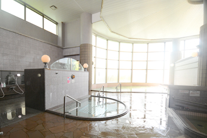
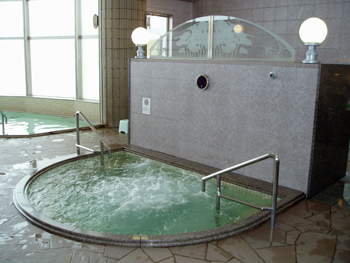
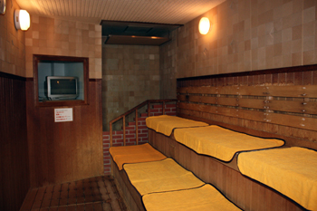

泉質・効能・源泉について

熱気のこもらない高い天井と、壁一面に広がる大きな窓。日頃のストレスと疲れを一気に解消してくれます。

程よい強さの泡と水流が全身を包んでくれる泡風呂。マッサージ効果と相まって、疲れた体を優しく癒してくれます。

横一列に大きく席を設けたサウナ。ゆったりとした空間の中で、心地よい汗を流していただけます。
※TVチャンネルの変更、サウナマットの交換もご希望に合わせていたします。
ナトリウム-炭酸水素塩冷鉱泉（中性低張性冷鉱泉）
神経痛、筋肉痛、関節痛、五十肩、運動麻痺、関節のこわばり、うちみ、くじき、冷え性、疲労回復、慢性消化器病、痔疾、病後回復期、健康増進、きりきず、やけど、慢性皮膚病
急性疾患（特に熱のある場合）、悪性腫瘍、重い心臓病、呼吸不全、腎不全、出血性疾患、活動性の結核、高度の貧血、その他一般に病勢進行中の疾患、妊娠中（特に初期と末期） など
上砂川岳温泉「パンケの湯」の源泉は約11℃と温度が低いため、熱交換器で入浴に適した温度まで加熱しています。
また、温泉資源を有効に活用するため循環ろ過方式を採用し、衛生管理のため人体に無害な塩素系薬剤を加えています。
なお、大浴槽と水風呂は源泉を使用し、泡風呂・洗い湯は水道水を使用しています。